Dictation at your fingertips.
An optional desktop companion for recording, transcription and inserting text. Follow the repository setup instructions.
Downloads & setup ↗SHARE LINKS. UNDERSTAND MORE.
A long article. A website. Text from another app.
Share it with EchoScribe, then read, translate or listen to the summary.
Your API key. Your provider. No EchoScribe subscription.
Provider API charges apply.
iPhone release in preparation. The tutorial below shows the Android app.
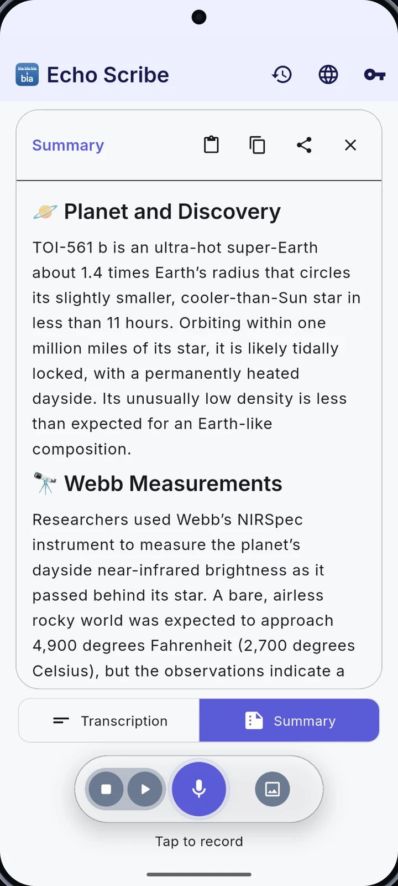
THE COMPLETE WALKTHROUGH
Watch every workflow in order, or jump into the feature you need below. Real Android app workflows, English narration and captions throughout.
▶ Play the full tutorial 5:34Open on YouTube ↗YouTube loads only when you choose to play a video.
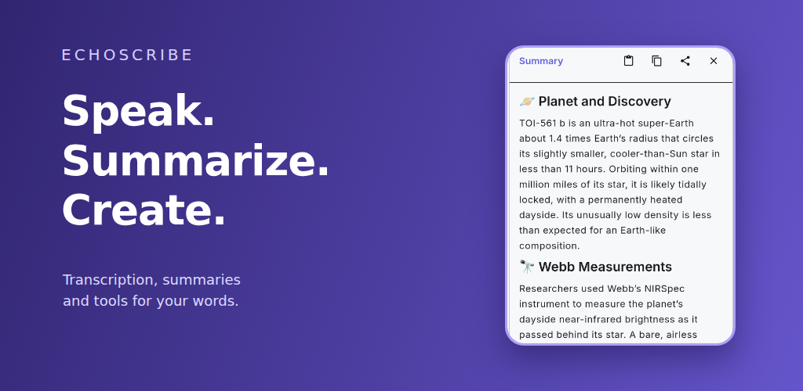
13 chapters 5 minutes, 34 secondsEXPLORE THE APP
Choose a feature. See the screen. Watch it in action.
CORE WORKFLOW / Articles to summaries
Found a long article? Use your browser’s share action to send its URL to EchoScribe. You can also share or paste text. Create a summary, double-tap to read it full screen, translate it or have it read aloud.
Share a URL or text → Summarize → Read, translate or listen
Watch chapter 45sEnglish · captions included
01 / Get to know EchoScribe
Share articles and text for clear summaries, then translate, listen or export. EchoScribe also includes recording, transcription and writing tools. Available on Android; the iPhone version is being prepared for release.
Bring your own API key · No EchoScribe subscription
Watch chapter 43sEnglish · captions included
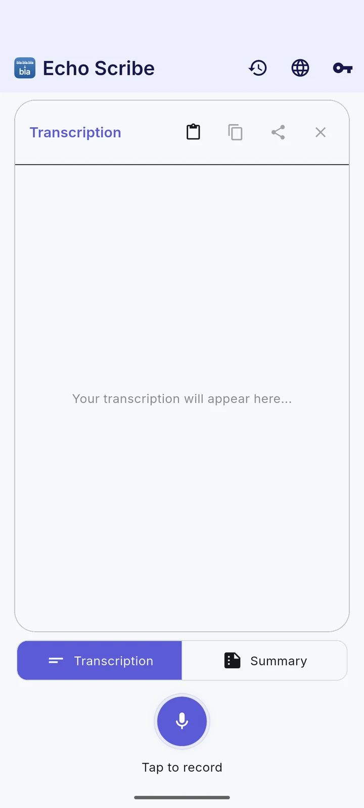
03 / Choose your provider
Connect the providers you want to use, including OpenAI, Gemini, Claude, Grok and ElevenLabs. Available tools depend on your selected provider.
API usage is billed separately by your provider.
Watch chapter 21sEnglish · captions included
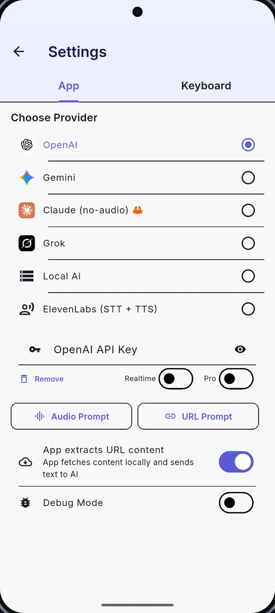
04 / Record your voice
Capture a thought, stop the recording and turn it into a transcript. Keep the words, then copy, share or summarize them.
The demo uses a real, short voice recording.
Watch chapter 22sEnglish · captions included
05 / Summaries & custom prompts
Turn shared text, an article or a transcript into a concise summary. Edit the URL/text or audio prompt to ask for the structure you need, such as key points or action items.
Your instructions guide the result.
Watch chapter 22sEnglish · captions included
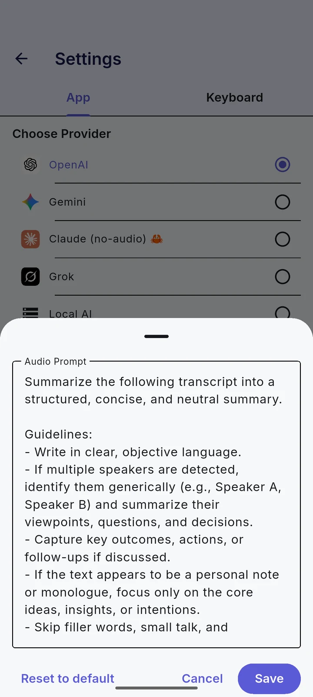
06 / Import audio & text
Bring an audio file into EchoScribe or paste existing text. Continue with the same transcription, summary and writing tools.
Audio files and pasted text, in one workflow.
Watch chapter 20sEnglish · captions included
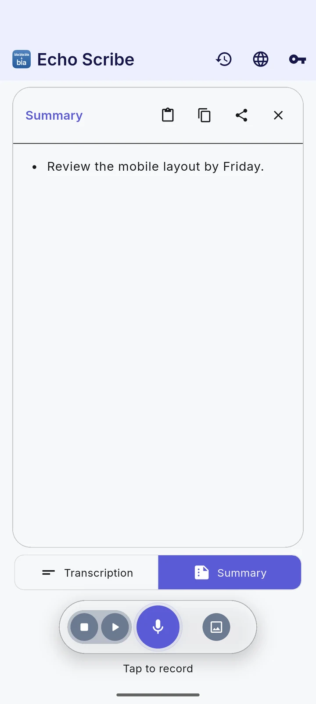
07 / Translate your text
Choose a target language and translate your text with your configured provider. Review the result and share it when you are ready.
One thought. Another language.
Watch chapter 21sEnglish · captions included
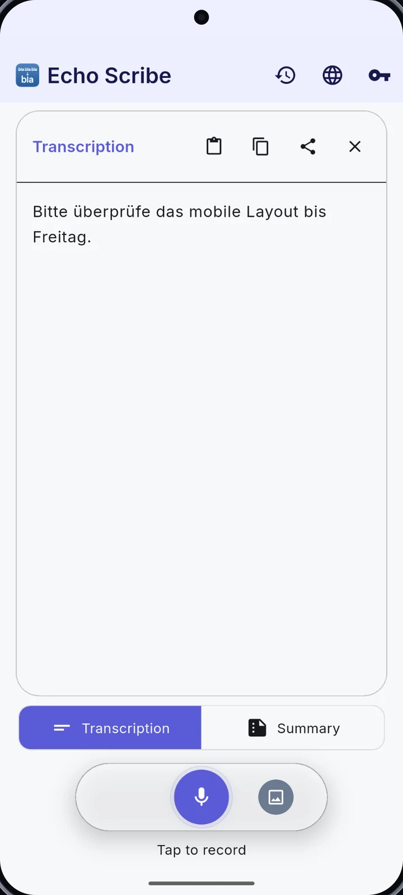
08 / Realtime transcription
Enable a supported realtime provider and watch the transcript appear during recording. Useful for keeping an eye on what has been captured.
Provider support and availability vary.
Watch chapter 24sEnglish · captions included
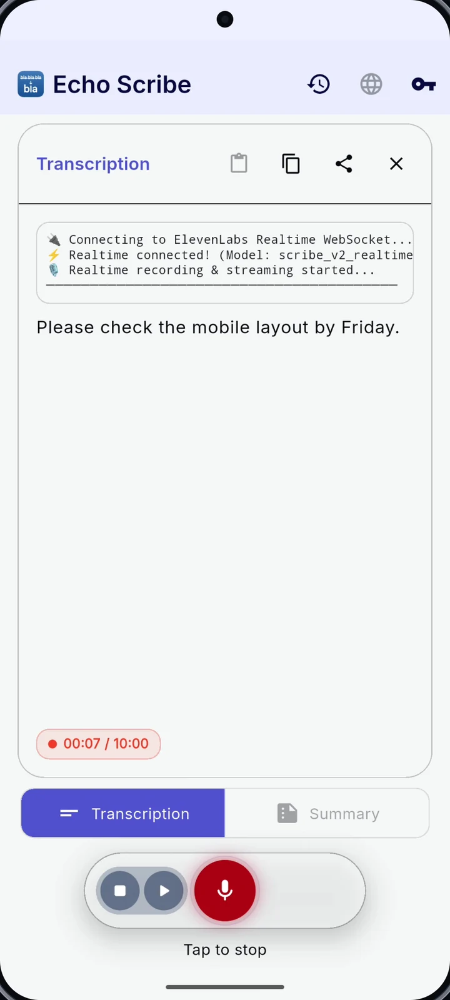
09 / The EchoScribe keyboard
Enable the EchoScribe keyboard and dictate into a text field. Switch between typing and voice without moving your draft into another app.
An Android keyboard with dictation built in.
Watch chapter 22sEnglish · captions included
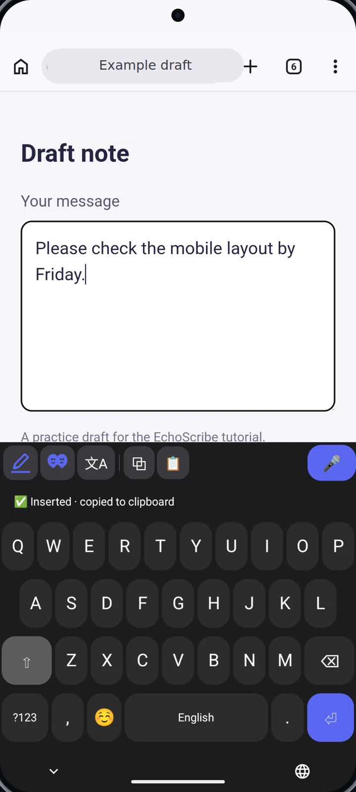
10 / Floating Dictation
Use the floating microphone in supported text fields. Record, review the transcription, then tap Insert to put it into your draft.
Optional overlay and Accessibility permissions are required.
Watch chapter 25sEnglish · captions included
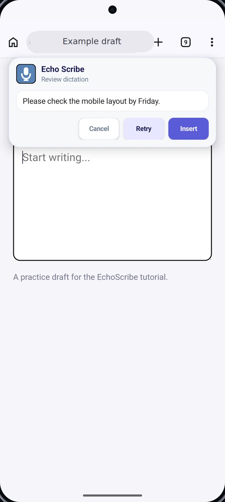
11 / Listen, share & revisit
Have a result read aloud, share it with another app or return to a previous entry in your local history. Your work stays easy to revisit.
Read aloud → Share → Local history
Watch chapter 19sEnglish · captions included
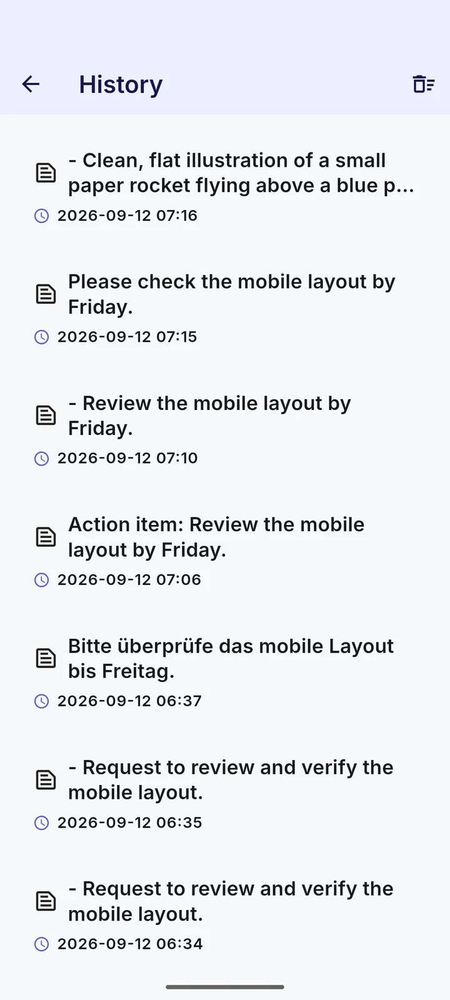
12 / Create images
Describe what you have in mind, generate an image with a supported provider, then view, save or share it.
The paper rocket shown here was generated in the app.
Watch chapter 21sEnglish · captions included
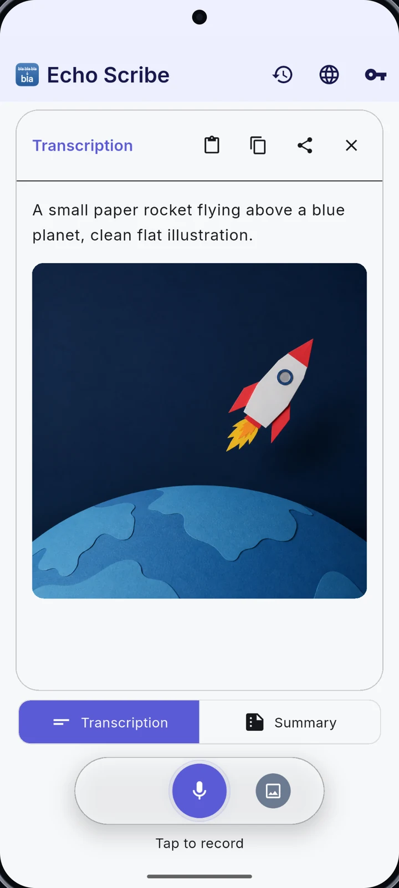
13 / Local AI · experimental
Configure your own compatible text and Whisper endpoints for supported summary and transcription workflows. The model server runs on your computer.
This chapter shows configuration, not a completed local inference.
Watch chapter 22sEnglish · captions included
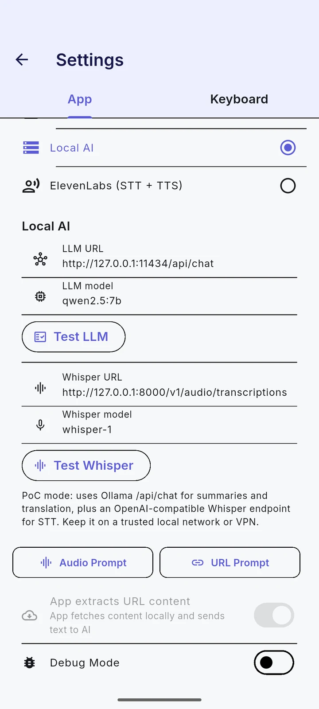
A PERSONAL VIBE CODING PROJECT
EchoScribe started as a private vibe coding project. I wanted a tool for myself, and the alternatives I found required paid subscriptions.
So I started building. A transcription tool became a place for summaries, translation, dictation and more. It has grown steadily, one useful feature at a time. The source is open for anyone to explore.
Explore the code on GitHub ↗BEYOND YOUR PHONE
YOUR DATA, EXPLAINED
There is no EchoScribe backend for AI requests. The selected provider processes your requests under its own terms, retention policies and billing settings. Local AI uses the endpoint you configure.
Read the full privacy policy ↗Explore the app at your own pace.